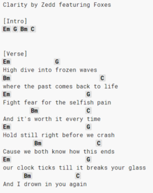

As mentioned briefly on the home page, my interests consist mainly of music and photography. I was truly lucky to have the opportunity to be homeschooled pretty much until high
school and be able to explore so many other activities and not only focus on schoolwork. My huge focus while I was homeschooled was learning as many instruments as possible and be
able to play them at a 2-3 year level in as short of time as possible. I also loved to study rocks while growing up. Being homeschooled also meant lots of field trips and more time
for family vacations. I'll be listing some sites below that are my top visited sites that relate to my personal interests/hobbies and explain first how they are relevant to me.
Being as obsessed as I am with music, I love to hear music all the time. The first link is one of my most listened to tracks while doing homework. It's a 4 hour compilation of Disney
piano covers by a composer/arranger known as Kno Piano and is based out of Japan. This specific set of covers along with a ton of his other piano covers are really nice to listen to
when you don't want to listen to music with any lyrics.
My second link will take you to my photography website, which I created with a GUI editor called Wix about 3 years ago. The goal of the site was to highlight some of my best pictures
and give inspiration to other photographers or people who may be interested in photography. Photography is more of a newer found hobby and I'm still learning the basics, but it's
been a really fun thing to learn in my free time since I invested in a nicer camera.
This third link is actually a pretty simple site that you input a word into and it gives you every single word that rhymes with it and categorizes it by the amount of syllables.
Another thing I found that I was not terrible at was writing poetry. Being able to feel a flow, like in music, made it a lot easier to write rhyming poetry and I use this site so
often, I bought the app.

The final link is a wiki type site where users can submit guitar, ukulele, and bass chords or tab sheets for specific songs. If you have never played guitar or are unsure what a
guitar tablature looks like, refer over to the picture on the right. The basics, without boring you, is that the chords that are played are noted right above the lyrics in which
you should play that chord. Chords such as "C Minor" are shortened to "Cm" and so on.